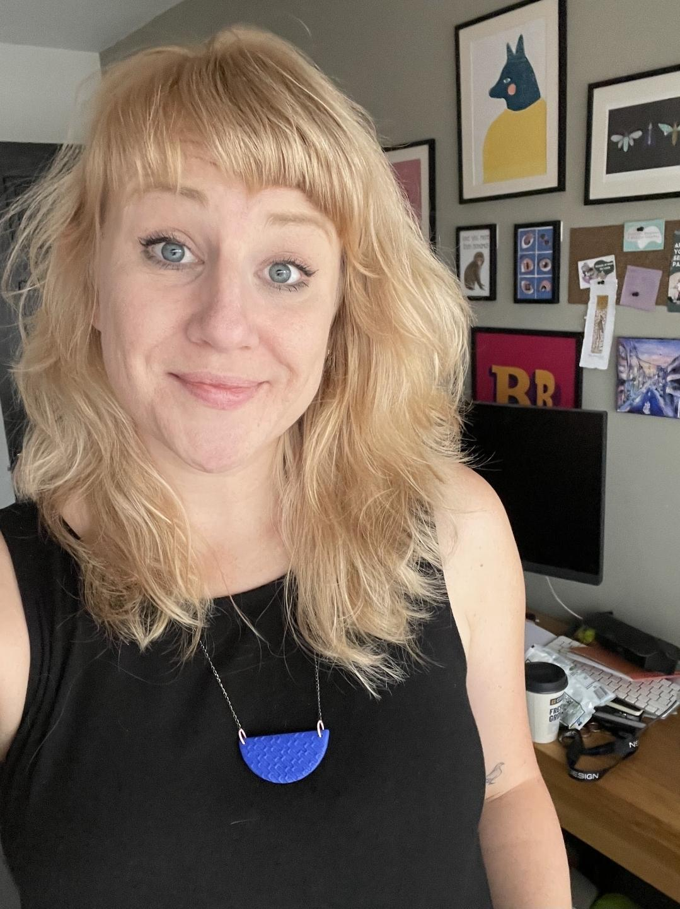
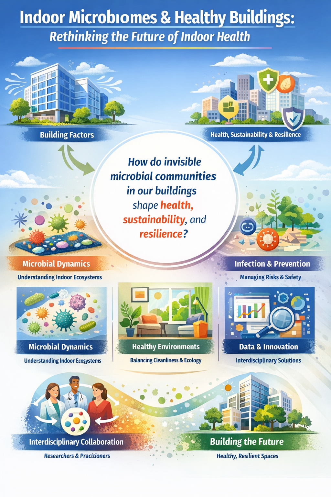
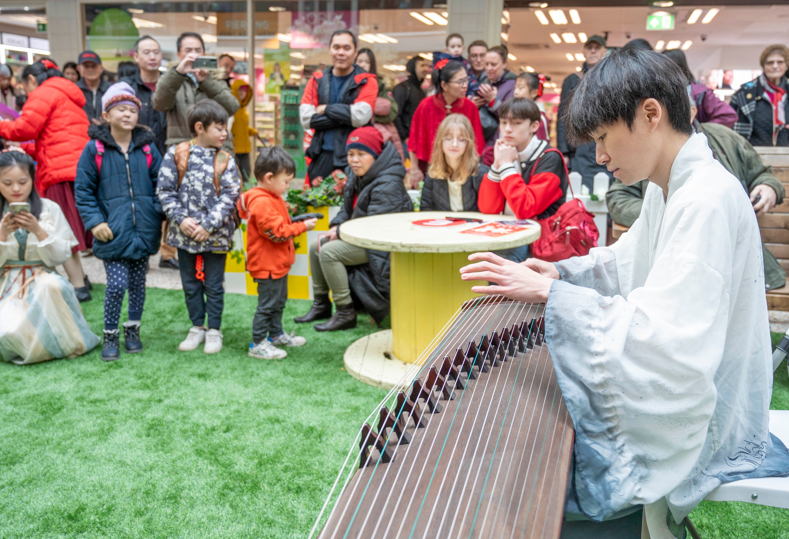
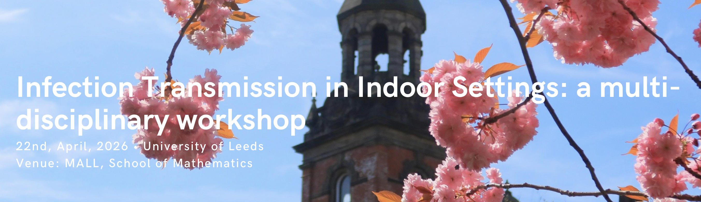

Eight projects across two funding rounds, exploring the frontiers of healthy and sustainable buildings — from living roofs and indoor air quality to microbiomes, acoustics, and infection transmission.

We have funded two rounds of projects — four pump-priming projects launched in early 2025, and four ECR-led projects running through 2025–26 — spanning indoor air quality, thermal comfort, microbiomes, acoustics, children's health, and infection transmission.
Round 1 (pump-priming): four projects received £3,000 each for exploratory research over a 6-month period. Round 2 (ECR-led): four projects led by early-career researchers, each running events in Spring 2026, co-funded at £1,500 each.
Round 1 — four cross-disciplinary research projects, each receiving £3,000 in exploratory funding.

With a clover living roof
This project explores the potential of clover (Trifolium spp.) as a versatile and sustainable option for living roofs. Going beyond traditional green roof benefits of insulation and carbon capture, the team investigates how clover’s hardy, nitrogen-fixing qualities can support pollinators, boost soil health, and even serve as a potential protein source. The project aims to create multifunctional rooftop spaces that enhance urban biodiversity, improve water retention, and promote circular-economy principles.
School of Food Science & Nutrition, University of Leeds (Lead Investigator)
Heugh Farm (Farming & crop development)
Faculty of Biological Sciences, University of Leeds
Faculty of Environment, University of Leeds

Indoor Temperature & Falls in Older Adults
THERMOAGE examines how exposure to cold or heat extremes indoors can affect posture, muscle function, and the risk of falling in older adults. By combining controlled climate chamber sessions, biomechanical monitoring, and occupant diaries, the study seeks to identify threshold indoor temperatures where balance and safety may be significantly compromised.
School of Civil Engineering, University of Leeds
School of Biomedical Sciences, University of Leeds
School of Civil Engineering, University of Leeds
Leeds Beckett University

Evidence-Based Design
“We shape our buildings, thereafter they shape us.” This project seeks to bridge the gap between compliance-focused housing standards and the real-world needs of residents. By integrating technical regulations with Post-Occupancy Evaluation (POE) data, we aim to embed occupant well-being, health, and happiness into the design process. Stakeholders—including developers, policymakers, architects, and residents—will collaborate to ensure new housing actively supports physical and mental well-being.
Head of Public Engagement with Research, University of Leeds
Developers, policymakers, local communities (TBD)

Passive Houses Study
Investigating how airtight, energy-efficient designs like Passive Houses influence indoor and outdoor air quality (I-O AQ). This project monitors pollutants such as NOx, CO₂, PM2.5, and ultrafine particles, correlating them with occupant behavior and ventilation practices.
SCAPE, University of Leeds
Civil Engineering, University of Leeds
Round 2 — four projects led by early-career researchers, each co-funded at £1,500 and running events through Spring 2026.

Lead: Dr Rodrigo Juarez — School of Civil Engineering
How can green spaces and building design support children's health, resilience, and everyday experiences? This project combines academic insight with community voices and playful design activities, co-produced with Playful Anywhere.



Lead: Dr Suparna Mitra — Leeds Institute of Medical Research
The air inside buildings isn't sterile — it's full of microbes. This workshop brings together experts in microbiology, engineering, architecture, and public health to explore how indoor microbiomes influence health, and to co-develop ideas for low-cost microbial sensing and ventilation strategies.


Lead: Dr Lijun Zhang — Faculty of Management and Organisation
How can sound shape our sense of belonging in shared spaces? This creative project explores acoustic design and community wellbeing, using participatory methods to co-design music spaces that foster inclusion and produce practical guidance for healthier indoor environments.


Co-PIs: Xiaoxuan Qin (Civil Engineering) & Marcus Marshall (Mathematics)
How does infection move through indoor environments — and how can buildings reduce the risk? This mini-symposium integrates perspectives from engineering, microbiology, and behavioural science, with talks, poster sessions, and structured discussions to co-create strategies for reducing indoor infection risk.
Our research aims to improve indoor environments to reduce respiratory issues, allergies, and stress-related health problems, while enhancing overall wellbeing.
By developing more sustainable building practices and technologies, our projects help reduce energy consumption, carbon emissions, and resource use.
Our research emphasizes inclusive approaches that benefit diverse populations, with particular attention to vulnerable groups and underserved communities.
Pilot Research
Small-scale studies to test concepts and gather preliminary data
Expanded Research
Larger studies based on promising pilot results
Real-World Impact
Implementation of findings in policy and practice
We have run two rounds of internal funding to catalyse cross-disciplinary research within the network. Further opportunities will be announced via our mailing list.
Four exploratory projects each received £3,000 over a 6-month period to investigate aspects of healthy built environments. Projects were selected through an open call and covered indoor air quality, thermal comfort, biophilic design, and infection transmission.
View projects →Four early-career researcher-led projects each received £1,500 co-funding to host public-facing events in Spring 2026. Topics ranged from child-friendly futures and home microbiomes to acoustic wellbeing and pathogen transmission.
View projects →Future funding calls will be announced to network members first. Join our mailing list to be notified when new opportunities open, and to receive updates on grants from UKRI, Innovate UK, and the Wellcome Trust.
Join Our NetworkInterested in learning more about our projects or exploring potential collaborations? Connect with our research teams directly.
Reach out to our network directors with questions about projects or funding opportunities.
healthy_buildings_network@leeds.ac.ukAttend our regular seminars to meet researchers and discuss ongoing projects.
View Upcoming EventsBecome part of our growing network of researchers, practitioners, and innovators working together to create healthier, more sustainable built environments.